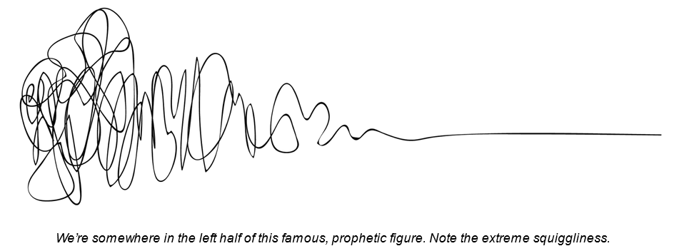
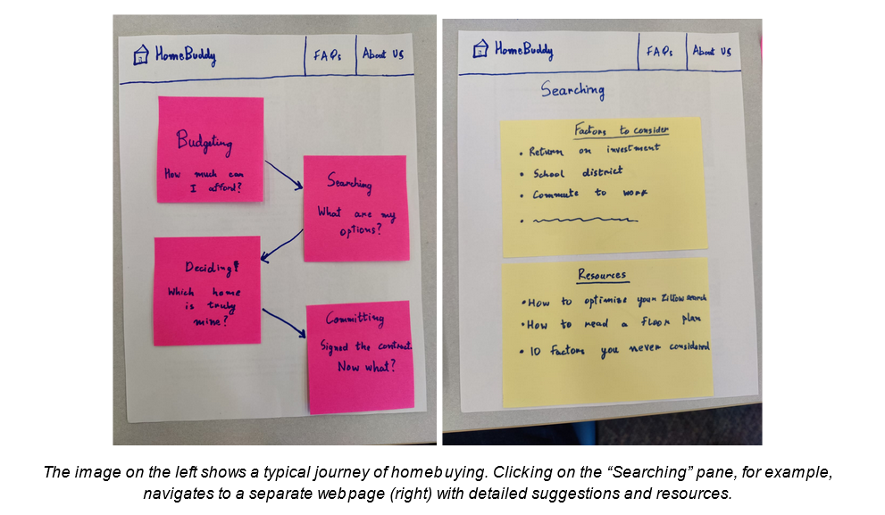
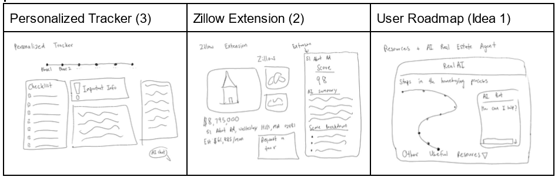
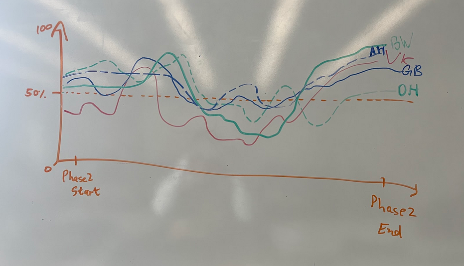

Our findings from Needs Analysis informed our next phase: Design Development.
Here we present a portfolio of our design ideas, followed by various supporting
design and process artifacts that outline our journey to those ideas.
Design Portfolio
Once we had identified our user's needs in our Needs Analysis phase, we had a meandering,
slightly chaotic journey to our current prototype. In the process, we considered a wide
range of design ideas en route to the idea we committed to.

Idea 1: User Journey Roadmap
One of the most important design ideas in our portfolio (that we ultimately pivoted away from),
was to have the home-buying journey laid out like a visual road map, with details about each
step of the journey and a checklist of important tasks for them to record and follow.
Here's an example of a representation:

The intent was to focus on the user's need of wanting to be more informed about the flow of the home buying process and more prepared for the bumps and inevitable surprises inherent to the process, but we moved away from this idea, retaining elements in our final idea (which will be revealed soon). We did not proceed with this idea for two reasons:
- Not personalized - one of the patterns emerging from our Needs Analysis was that the home-buying process is incredibly personal and situation-specific, and we recognized that a personalized website would be a necessary value-add.
- Other options exist - we found numerous alternative websites, such as this one, that already do this! While we hadn't found these websites from our initial research, further digging showed many resource pages that were already addressing this.
Idea 2: Zillow Extension for House Evaluation
Another idea we considered was an extension for Zillow. We understood that Zillow is already a great tool for finding homes and it would not make much sense to try to build a whole new home-finding site to compete with it. Depending on what page of Zillow the user was looking at, the extension would provide helpful information.
- The user needs that this extension focused on were the uncertainty of whether the house you're looking at is the house for you, especially in terms of financials and hidden expenses that could be debilitating.
- Examples of how the extension could work:
- If looking at the neighborhood map feature of a certain zip code, the extension would pull relevant information from Zillow and outside sources about that are giving scores on schools, distance to entertainment, crime, natural disaster vulnerability
- If looking at a specific house's page, the extension would give a score of the house baked on weighted criteria inputted by the user into the extension like an overall score of the house (if user prioritizes a nice, big primary bathroom, a house with their ideal bathroom but a bad kitchen will get a higher score than a house with a small primary bathroom but a decent kitchen)
Idea 3: Personalized Tracker
The homebuying process is very complicated for first time homebuyers. We would take information like location, relevant documents, and type of house to make a personalized tracker. The main feature would be the personalized tracker where it will tell the user the current step they are at, but will include other important features, such as a checklist and important messages. This will help keep buyers informed and on top of the process.
Other Ideas
- An AI real estate agent that alleviates most issues that arise from a real estate agent.
- An app that helps people find and pick houses
- This app would be a competitor of Zillow with many of the capabilities of Zillow plus the functionalities of the above extension
- It addresses the needs of both Newbie Ned and Investor Ivy (our persona) by helping both inexperienced and experienced buyers find and get in contact with home sellers
Idea Sketches
We sketched out each of these ideas as part of the process of specifying and eliminating to narrow down on a single, refined concept.

Full sketches can be found here
Evaluation
After comparing our ideas against our brief and validating that our ideas create some form of new value that does not already exist we came to the conclusion that the personalized tracker would best meet our users’ needs and add value even in the case that the user already has the help and guidance of a realtor.
The features of this approach are the following:
- A personal progress bar
- A task checklist
- Things to look out for
- Document/Form summarization
- Access to local rules and regulations
- Document storage
Storyboard
Now that we were gradually narrowing down on our product idea, we attempted to chart out a user's journey through our product in an interaction flow diagram. Here is the external link to our Interaction Flow
Paper Prototype
Next, we created a low-fidelity paper prototype of our proposed product to better understand its features and test with users in co-designs.
Images of all the interfaces of the full prototype can be found here
Idea Testing
So far we have conducted 1 co-design session and scheduled for a second one later this week. See interview notes (externally linked) here.
Below are our key insights:
- There is already a solution to a storage locker feature currently called Docusign, so if we were to implement such a thing it would be an integration with that.
- The journey map would be extremely helpful especially if it included a timeline
- Blog name may need to be changed because blog == opinions
- The blog and FAQ pages are a bit cluttered and may be combined to make it more simple
- Love the idea of AI Chatbot
- Hate logging in and giving out emails. Wouldn’t especially trust this website unless from lawyer/realtor
- Having a module on the dashboard with relevant links to blog pages or anticipated questions would be very helpful
Report
With everything we learned so far, we produced a report for our presumed client for this product:
"Home Buddy," is a website tailored for first-time home buyers. It operates as a personalized assistant, helping users navigate the often intricate process of purchasing their first home. With a focus on organization, Home Buddy enables users to easily track important documents, notes, and specific information relevant to home buying policies in their specific area. What sets it apart is its engaging and interactive approach, complete with a personalized avatar and a custom progress bar to represent the user's position on their home buying journey, making the experience both enjoyable and motivating.
Moreover, the website incorporates unique features, including an AI chatbot. This AI chatbot serves as a specialized assistant, providing answers to home-buying questions within the context of the user's account and readily available internet information. It's important to note that the chatbot is designed to complement rather than replace the guidance of a real estate agent, offering users a secondary advisory resource. In essence, Home Buddy aims to streamline and personalize the home buying experience, making it more user-friendly, engaging, and informative for first-time buyers.
How does it work?
Home Buddy works in two different ways. First, it acts as a generalized timeline for folks who don't have an account. In this case, the website is click based and doesn’t contain any of the user’s personal information. In the other case, the user will be prompted with a login button at the top right of the screen. By clicking this, it brings them to a page that allows them to either sign up or log in. If someone is signing up, there will be a set of questions that the website gives to start personalizing the tracker. Once an account is made and the user has answered all the questions, they will be greeted with our dashboard which contains basic information as well as the tracker. From here, there are three possible places to click that will take you to another section of the website. First, by clicking on the tracker, you will be taken to a page that has more in depth details about the current step as well as access to other steps through a click. Next, there is a documents page which holds all relevant documents that a person needs to actually purchase a house successfully. Here the documents will be separated and summarized. Lastly, the user will be able to chat with our personalized chatbot which knows the information and can help make decisions.
Based on what you told us
More than one user has told us that there was just so much they didn’t know about looking back on the process. They wished they had more knowledge going into home buying then they did at the time. And especially when they had a realtor, a big component of the process that they had to have was trust in their realtor as a professional who had their best interests in mind. It was hard to build that confidence on their own and have that understanding such that they could be working with their agent rather than only being able to trust their agent to guide them.
Our design gives our users that confidence and control over their personal process by providing knowledge about the general process and a way to acquire knowledge unique to them and to store that personalized information all in one place. Our site explains the entire process at a high-level so users can familiarize themselves before they really start and have that prior knowledge coming in. In addition to having access to important information all in one place, they can also save and document their progress and specific information and media (signed forms and documents) all in one place for ebay reference in the future.
However, users not only mentioned lack of knowledge, but also that the information they were gaining came in fast and was hard to understand. Our site presents relevant information in a way that is not overwhelming and is easy for anyone to understand not only about the general process but about forms and which agreements to expect when along with a summary of those forms and what sections are important in those documents, so users can also feel like they know what’s going and how each paper they sign fits into the process.
Overall, our design meets user needs by empowering them through the process with information and easy tracking of their progress. However, it does fall short in some areas such that it cannot help them find an exact house, but instead provides prompting questions for users to know what they should look out for. Multiple users mentioned wishing they had more information about the surroundings of the house, be it natural or social. For instance one user said they wanted to find information about data for floodplains in the area they were interested in. Rather than the site providing that information or even a link to where they can find it, instead we would ask them a question like, “Is your area susceptible to certain natural disasters? If so, which ones? Which areas are safest?” There is too much weather information out there that is always changing for our site to always have that data on hand for a specific user, but we can help users know that climate in their desired area is important to consider and that they should take steps to know that information.
What were other ideas?
We considered many designs before we reached our current version. Here are some small but impactful designs we considered before arriving where we are now.
- Different progress bars (it took many iterations to get to our current one)
- Including FAQ section
- Search bar used to be a conventional search bar
- Entering search area as zip code and location
Insights
We found many key insights as we have iterated on our design. We made our first insight early on in our design, which was don’t create solutions to problems that have already been solved. Our first idea helped first time homebuyers by helping them find the right home. This sounds awfully familiar to Zillow and other real estate websites and they do a pretty good job at helping buyers find the right home.
After pivoting to our current design idea, we encountered our second insight: realtors are a good resource already. We kept that in mind while designing our website so that we are providing the knowledge and tools that keep buyers informed rather than outright replacing a realtor. Through our research, we found a surprisingly large amount of resources that are out there describing the process. However, there aren’t any that are both detailed and comprehensive. Because of this, we added features such as the blog and FAQ sections to provide a knowledge hub for our user group.
Effort Chart
Lastly, our effort chart reflects our individual effort in this phase. We chose a different chart
type than last time to better present our overall contributions over that period.
